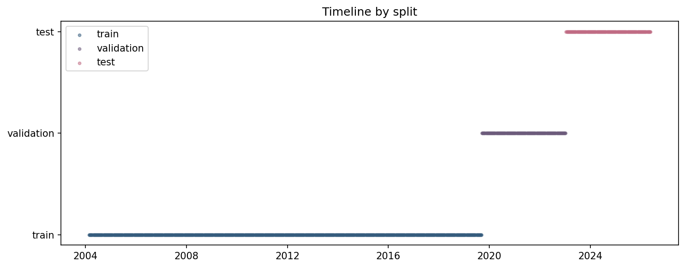
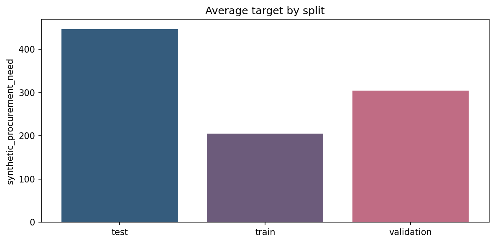
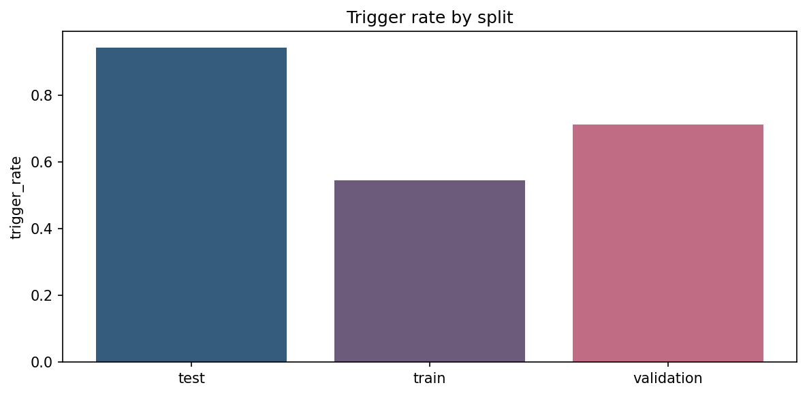
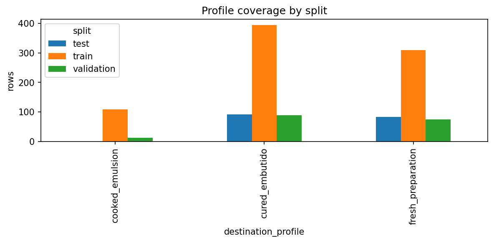

# CU28 mixed_context - Split Validation and Leakage Audit
Notebook narrativo de auditoria para el scope `mixed_context`.
## Objetivo
Demostrar que los splits train, validation y test son cronologicos, no se mezclan temporalmente y reservan test para evaluacion final.
## Alcance
Este analisis describe la ruta oficial reproducible `mixed_context`. Las senales externas se tratan como contexto/proxy. Las variables internas de planta siguen siendo sinteticas salvo carga posterior de cliente.
## Inputs
- `data/splits/baseline/default__mixed_context/train.csv`
- `data/splits/baseline/default__mixed_context/validation.csv`
- `data/splits/baseline/default__mixed_context/test.csv`
- `data/splits/baseline/default__mixed_context/split_metadata.json`
- `data/processed/baseline/feature_engineering_modeling__mixed_context.csv`
## Outputs esperados
- `reports/tables/eda/split_summary__mixed_context.csv`
- `reports/tables/eda/split_validation_checks__mixed_context.csv`
- `reports/tables/eda/split_target_distribution__mixed_context.csv`
- `reports/figures/eda/split_timeline__mixed_context.png`
- `reports/figures/eda/target_by_split__mixed_context.png`
- `reports/figures/eda/trigger_by_split__mixed_context.png`
- `reports/figures/eda/profile_coverage_by_split__mixed_context.png`
## Limitaciones
Este notebook documenta evidencia reproducible del pipeline oficial, pero no sustituye la revision de codigo, la auditoria de datos de origen ni una certificacion operacional de planta.
Code
from pathlib import Path
import json
import numpy as np
import pandas as pd
import matplotlib
matplotlib.use("Agg")
import matplotlib.pyplot as plt
from src.reproducibility.notebook_support import (
detect_temporal_columns,
ensure_eda_dirs,
execution_metadata,
first_valid_temporal_range,
load_source_manifests,
load_tabular_file,
parse_markdown_table,
print_frame,
print_series,
project_root,
read_json,
relative_to_root,
save_figure,
save_table,
sha256_file,
)
Output
Code
NOTEBOOK_NAME = "06_split_validation_and_leakage_audit.ipynb"
PROJECT_ROOT = project_root()
SCOPE = globals().get("scope", "mixed_context")
REPORT_DIRS = ensure_eda_dirs()
META = execution_metadata(SCOPE)
FIGURES = []
TABLES = []
print(json.dumps(META, indent=2))
Output
{
"scope": "mixed_context",
"executed_at_utc": "2026-06-17T10:30:08.928327+00:00",
"commit": "b2fc273adf68c17087b4637655067bc80d417fa9"
}
## Carga de datos
Las siguientes celdas cargan los artefactos de entrada y muestran verificaciones intermedias antes de producir tablas y graficas.
Code
split_root = PROJECT_ROOT / "data/splits/baseline/default__mixed_context"
train_df = pd.read_csv(split_root / "train.csv")
validation_df = pd.read_csv(split_root / "validation.csv")
test_df = pd.read_csv(split_root / "test.csv")
for frame in [train_df, validation_df, test_df]:
frame["date"] = pd.to_datetime(frame["date"], errors="coerce")
split_meta = read_json(split_root / "split_metadata.json")
print({"train_rows": len(train_df), "validation_rows": len(validation_df), "test_rows": len(test_df)})
Output
{'train_rows': 812, 'validation_rows': 174, 'test_rows': 175}
Code
split_summary = pd.DataFrame(
[
{
"split": "train",
"rows": len(train_df),
"date_min": str(train_df["date"].min().date()),
"date_max": str(train_df["date"].max().date()),
},
{
"split": "validation",
"rows": len(validation_df),
"date_min": str(validation_df["date"].min().date()),
"date_max": str(validation_df["date"].max().date()),
},
{
"split": "test",
"rows": len(test_df),
"date_min": str(test_df["date"].min().date()),
"date_max": str(test_df["date"].max().date()),
},
]
)
print_frame("Split summary", split_summary, rows=10)
display(split_summary)
Output
Split summary
split rows date_min date_max
train 812 2004-02-23 2019-09-09
validation 174 2019-09-16 2023-01-09
test 175 2023-01-16 2026-05-18
| split |
rows |
date_min |
date_max |
| train |
812 |
2004-02-23 |
2019-09-09 |
| validation |
174 |
2019-09-16 |
2023-01-09 |
| test |
175 |
2023-01-16 |
2026-05-18 |
## Validaciones cronologicas
Se comprueba explicitamente que train termina antes de validation y que validation termina antes de test.
Code
chronology_checks = pd.DataFrame(
[
{"check": "max_train_before_min_validation", "pass": bool(train_df["date"].max() < validation_df["date"].min())},
{"check": "max_validation_before_min_test", "pass": bool(validation_df["date"].max() < test_df["date"].min())},
]
)
print_frame("Chronology checks", chronology_checks)
display(chronology_checks)
Output
Chronology checks
check pass
max_train_before_min_validation True
max_validation_before_min_test True
| check |
pass |
| max_train_before_min_validation |
True |
| max_validation_before_min_test |
True |
Code
train_keys = set(zip(train_df["date"], train_df["destination_profile"], train_df["raw_material_id"]))
validation_keys = set(zip(validation_df["date"], validation_df["destination_profile"], validation_df["raw_material_id"]))
test_keys = set(zip(test_df["date"], test_df["destination_profile"], test_df["raw_material_id"]))
overlap_counts = pd.DataFrame(
[
{"pair": "train_validation", "overlap_rows": len(train_keys & validation_keys)},
{"pair": "validation_test", "overlap_rows": len(validation_keys & test_keys)},
{"pair": "train_test", "overlap_rows": len(train_keys & test_keys)},
]
)
print_frame("Duplicate keys across splits", overlap_counts)
display(overlap_counts)
Output
Duplicate keys across splits
pair overlap_rows
train_validation 0
validation_test 0
train_test 0
| pair |
overlap_rows |
| train_validation |
0 |
| validation_test |
0 |
| train_test |
0 |
Code
combined = pd.concat(
[
train_df.assign(split="train"),
validation_df.assign(split="validation"),
test_df.assign(split="test"),
],
ignore_index=True,
)
target_by_split = combined.groupby("split")["synthetic_procurement_need"].agg(["mean", "median", "min", "max"]).reset_index()
trigger_by_split = combined.groupby("split")["purchase_trigger_label"].mean().reset_index()
profile_coverage = combined.groupby(["split", "destination_profile"]).size().reset_index(name="rows")
print_frame("Target by split", target_by_split)
print_frame("Trigger rate by split", trigger_by_split)
print_frame("Profile coverage", profile_coverage, rows=20)
Output
Target by split
split mean median min max
test 446.865974 451.213193 149.750371 1055.525357
train 205.578954 204.071208 15.021012 519.772503
validation 304.600576 305.038578 57.919904 861.603088
Trigger rate by split
split purchase_trigger_label
test 0.942857
train 0.544335
validation 0.712644
Profile coverage
split destination_profile rows
test cured_embutido 92
test fresh_preparation 83
train cooked_emulsion 108
train cured_embutido 394
train fresh_preparation 310
validation cooked_emulsion 12
validation cured_embutido 88
validation fresh_preparation 74
## Visualizacion de splits
Las graficas siguientes deben dejar claro que la separacion es temporal, que la distribucion del target cambia de forma razonable y que ningun split usa informacion futura para seleccion.
Code
fig, ax = plt.subplots(figsize=(10, 4))
offsets = {"train": 0, "validation": 1, "test": 2}
colors = {"train": "#355c7d", "validation": "#6c5b7b", "test": "#c06c84"}
for split_name, split_df in [("train", train_df), ("validation", validation_df), ("test", test_df)]:
ax.scatter(split_df["date"], np.full(len(split_df), offsets[split_name]), s=8, alpha=0.5, color=colors[split_name], label=split_name)
ax.set_yticks([0, 1, 2])
ax.set_yticklabels(["train", "validation", "test"])
ax.set_title("Timeline by split")
ax.legend()
FIGURES.append(save_figure(fig, "split_timeline__mixed_context.png"))
plt.close(fig)
Output
Figure saved to: C:\Users\Erick Mercado\Documents\a28-cnp-carnico-neuroevolutivas-materia\reports\figures\eda\split_timeline__mixed_context.png

Code
fig, ax = plt.subplots(figsize=(8, 4))
ax.bar(target_by_split["split"], target_by_split["mean"], color=["#355c7d", "#6c5b7b", "#c06c84"])
ax.set_title("Average target by split")
ax.set_ylabel("synthetic_procurement_need")
FIGURES.append(save_figure(fig, "target_by_split__mixed_context.png"))
plt.close(fig)
Output
Figure saved to: C:\Users\Erick Mercado\Documents\a28-cnp-carnico-neuroevolutivas-materia\reports\figures\eda\target_by_split__mixed_context.png

Code
fig, ax = plt.subplots(figsize=(8, 4))
ax.bar(trigger_by_split["split"], trigger_by_split["purchase_trigger_label"], color=["#355c7d", "#6c5b7b", "#c06c84"])
ax.set_title("Trigger rate by split")
ax.set_ylabel("trigger_rate")
FIGURES.append(save_figure(fig, "trigger_by_split__mixed_context.png"))
plt.close(fig)
Output
Figure saved to: C:\Users\Erick Mercado\Documents\a28-cnp-carnico-neuroevolutivas-materia\reports\figures\eda\trigger_by_split__mixed_context.png

Code
pivot_profile = profile_coverage.pivot(index="destination_profile", columns="split", values="rows").fillna(0)
fig, ax = plt.subplots(figsize=(8, 4))
pivot_profile.plot(kind="bar", ax=ax)
ax.set_title("Profile coverage by split")
ax.set_ylabel("rows")
FIGURES.append(save_figure(fig, "profile_coverage_by_split__mixed_context.png"))
plt.close(fig)
Output
Figure saved to: C:\Users\Erick Mercado\Documents\a28-cnp-carnico-neuroevolutivas-materia\reports\figures\eda\profile_coverage_by_split__mixed_context.png

Code
checks_df = chronology_checks.copy()
checks_df["detail"] = [
"train end before validation start",
"validation end before test start",
]
checks_df = pd.concat(
[
checks_df,
pd.DataFrame([{"check": "no_overlap_between_splits", "pass": int(overlap_counts["overlap_rows"].sum()) == 0, "detail": "no duplicated key tuple across splits"}]),
],
ignore_index=True,
)
print_frame("Pass fail checks", checks_df, rows=20)
display(checks_df)
Output
Pass fail checks
check pass detail
max_train_before_min_validation True train end before validation start
max_validation_before_min_test True validation end before test start
no_overlap_between_splits True no duplicated key tuple across splits
| check |
pass |
detail |
| max_train_before_min_validation |
True |
train end before validation start |
| max_validation_before_min_test |
True |
validation end before test start |
| no_overlap_between_splits |
True |
no duplicated key tuple across splits |
## Interpretacion
`validation` se usa para seleccion y calibracion. `test` queda reservado a evaluacion final. La grafica temporal debe mostrar bloques ordenados sin mezcla entre periodos.
Code
TABLES.append(save_table(split_summary, "split_summary__mixed_context.csv"))
TABLES.append(save_table(checks_df, "split_validation_checks__mixed_context.csv"))
TABLES.append(save_table(target_by_split, "split_target_distribution__mixed_context.csv"))
RESULT = {
"notebook": NOTEBOOK_NAME,
"tables": TABLES,
"figures": FIGURES,
"findings": [
"Train, validation and test remain chronologically ordered.",
"No duplicate key tuples were found across splits in the defended dataset.",
"Validation is the selection surface while test is reserved for final evaluation.",
],
"limitations": [
"Coverage by profile can still differ across splits because the scenario mix evolves over time.",
],
}
print(json.dumps(RESULT, indent=2))
Output
Table saved to: C:\Users\Erick Mercado\Documents\a28-cnp-carnico-neuroevolutivas-materia\reports\tables\eda\split_summary__mixed_context.csv
Table saved to: C:\Users\Erick Mercado\Documents\a28-cnp-carnico-neuroevolutivas-materia\reports\tables\eda\split_validation_checks__mixed_context.csv
Table saved to: C:\Users\Erick Mercado\Documents\a28-cnp-carnico-neuroevolutivas-materia\reports\tables\eda\split_target_distribution__mixed_context.csv
{
"notebook": "06_split_validation_and_leakage_audit.ipynb",
"tables": [
"reports/tables/eda/split_summary__mixed_context.csv",
"reports/tables/eda/split_validation_checks__mixed_context.csv",
"reports/tables/eda/split_target_distribution__mixed_context.csv"
],
"figures": [
"reports/figures/eda/split_timeline__mixed_context.png",
"reports/figures/eda/target_by_split__mixed_context.png",
"reports/figures/eda/trigger_by_split__mixed_context.png",
"reports/figures/eda/profile_coverage_by_split__mixed_context.png"
],
"findings": [
"Train, validation and test remain chronologically ordered.",
"No duplicate key tuples were found across splits in the defended dataset.",
"Validation is the selection surface while test is reserved for final evaluation."
],
"limitations": [
"Coverage by profile can still differ across splits because the scenario mix evolves over time."
]
}
| split |
rows |
date_min |
date_max |
| train |
812 |
2004-02-23 |
2019-09-09 |
| validation |
174 |
2019-09-16 |
2023-01-09 |
| test |
175 |
2023-01-16 |
2026-05-18 |
| check |
pass |
detail |
| max_train_before_min_validation |
True |
train end before validation start |
| max_validation_before_min_test |
True |
validation end before test start |
| no_overlap_between_splits |
True |
no duplicated key tuple across splits |
| split |
mean |
median |
min |
max |
| test |
446.865974 |
451.213193 |
149.750371 |
1055.525357 |
| train |
205.578954 |
204.071208 |
15.021012 |
519.772503 |
| validation |
304.600576 |
305.038578 |
57.919904 |
861.603088 |
## Limitaciones
Un split cronologico no elimina toda deriva temporal. Solo garantiza que la evaluacion final no vea filas posteriores durante la seleccion de configuracion.
## Concluson final
La evidencia conjunta de fechas, no solapamiento y uso diferenciado de validation/test permite defender la estrategia de particionado del pipeline mixed_context.